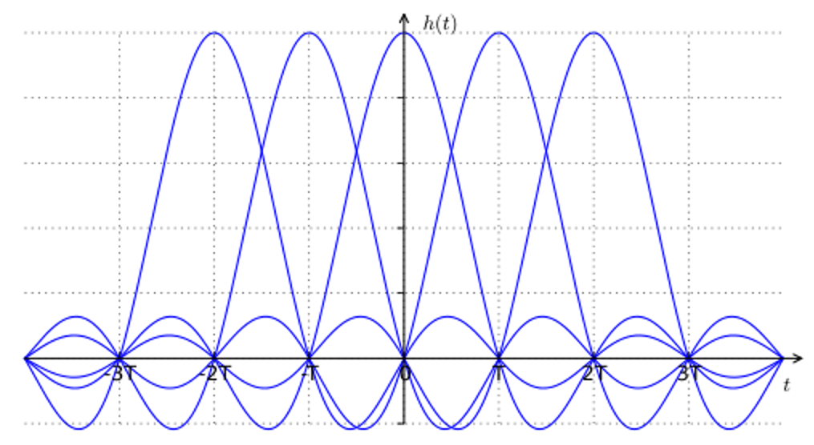
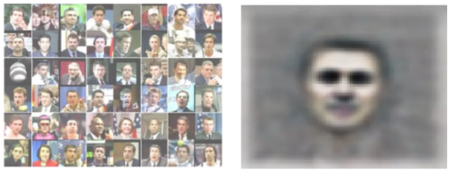
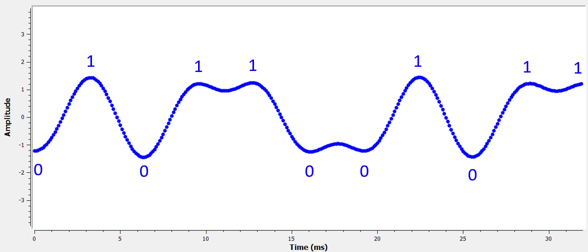
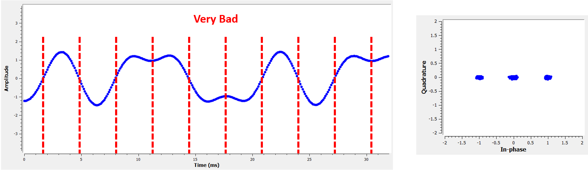

13. Pulse Shaping¶
You can consider this section Part II of the Filters chapter, where we take a deeper dive into pulse shaping.
Inter-Symbol-Interference (ISI)¶
In the Filters chapter we learned that blocky-shaped symbols/pulses use an excess amount of spectrum, and we can greatly reduce the amount of spectrum used by “shaping” our pulses. However, you can’t use just any low-pass filter or you might get inter-symbol-interference (ISI), where symbols bleed into and interfere with each other.
When we transmit digital symbols, we transmit them back-to-back (as opposed to waiting some time between them). When you apply a pulse-shaping filter, it elongates the pulse in the time domain (in order to condense it in frequency), which causes adjacent symbols to overlap with each other. The overlap is fine, as long as your pulse-shaping filter meets this one criterion: all of the pulses must add up to zero at every multiple of our symbol period , except for one of the pulses. The idea is best understood through the following visualization:
{kind=link}
As you can see at every interval of , there is one peak of a pulse while rest of the pulses are at 0 (they cross the x-axis). When the receiver samples the signal, it does so at the perfect time (at the peak of the pulses), meaning that is the only point in time which matters. Usually there is a symbol synchronization block at the receiver that ensures the symbols are sampled at the peaks.
Matched Filter¶
One trick we use in wireless communications is called matched filtering. To understand matched filtering you must first understand these two points:
- The pulses we discussed above only have to be aligned perfectly at the receiver prior to sampling. Until that point it doesn’t really matter if there is ISI, i.e., the signals can fly through the air with ISI and it’s OK.
- We want a low-pass filter in our transmitter to reduce the amount of spectrum our signal uses. But the receiver also needs a low-pass filter to eliminate as much noise/interference next to the signal as possible. As a result, we have a low-pass filter at the transmitter (Tx) and another at the receiver (Rx), then sampling occurs after both filters (and the wireless channel’s effects).
What we do in modern communications is split the pulse shaping filter equally between the Tx and Rx. They don’t have to be identical filters, but, theoretically, the optimal linear filter for maximizing the SNR in the presence of AWGN is to use the same filter at both the Tx and Rx. This strategy is called the “matched filter” concept.
Another way of thinking about matched filters is that the receiver correlates the received signal with the known template signal. The template signal is essentially the pulses the transmitter sends, irrespective of the phase/amplitude shifts applied to them. Recall that filtering is done by convolution, which is basically correlation (in fact they are mathematically the same when the template is symmetrical). This process of correlating the received signal with the template gives us our best chance at recovering what was sent, and it is why it’s theoretically optimal. As an analogy, think of an image recognition system that looks for faces using a template of a face and a 2D correlation:
{kind=link}
Splitting a Filter in Half¶
How do we actually split a filter in half? Convolution is associative, which means:
Let’s imagine  as our input signal, and and
as our input signal, and and  are filters. Filtering with , and then is the same as filtering with one filter equal to .
are filters. Filtering with , and then is the same as filtering with one filter equal to .
Also, recall that convolution in time domain is multiplication in frequency domain:
To split a filter in half you can take the square root of the frequency response.
Specific Pulse Shaping Filters¶
We know that we want to:
- Design a filter that reduces the bandwidth of our signal (to use less spectrum) and all pulses except one should sum to zero every symbol interval.
- Split the filter in half, putting one half in the Tx and the other in the Rx.
Let’s look at some specific filters that are common to use for pulse-shaping.
Raised-Cosine Filter¶
The most popular pulse-shaping filter seems to be the “raised-cosine” filter. It’s a good low-pass filter for limiting the bandwidth our signal will occupy, and it also has the property of summing to zero at intervals of :

Note that the above plot is in the time domain. It depicts the impulse response of the filter. The  parameter is the only parameter for the raised-cosine filter, and it determines how quickly the filter tapers off in the time domain, which will be inversely proportional with how quickly it tapers off in frequency:
parameter is the only parameter for the raised-cosine filter, and it determines how quickly the filter tapers off in the time domain, which will be inversely proportional with how quickly it tapers off in frequency:
The reason it’s called the raised-cosine filter is because the frequency domain when is a half-cycle of a cosine wave, raised up to sit on the x-axis.
The equation that defines the impulse response of the raised-cosine filter is:
Remember: we split this filter between the Tx and Rx equally. Enter the Root Raised Cosine (RRC) Filter!
Root Raised-Cosine Filter¶
The root raised-cosine (RRC) filter is what we actually implement in our Tx and Rx. Combined they form a normal raised-cosine filter, as we discussed. Because splitting a filter in half involves a frequency-domain square root, the impulse response gets a bit messy:

Luckily it’s a heavily used filter and there are plenty of implementations, including in Python.
Other Pulse-Shaping Filters¶
Other filters include the Gaussian filter, which has an impulse response resembling a Gaussian function. There is also a sinc filter, which is equivalent to the raised-cosine filter when . The sinc filter is more of an ideal filter, meaning it eliminates the frequencies necessary without much of a transition region.
Roll-Off Factor¶
Let’s scrutinize the parameter . It is a number between 0 and 1, and is called the “roll-off” factor or sometimes “excess bandwidth”. It determines how fast, in the time domain, the filter rolls off to zero. Recall that, to be used as a filter, the impulse response should decay to zero on both sides:
More filter taps are required the lower gets. When the impulse response never fully hits zero, so we try to get as low as possible without causing other issues. The lower the roll-off, the more compact in frequency we can create our signal for a given symbol rate, which is always important.
A common equation used to approximate bandwidth, in Hz, for a given symbol rate and roll-off factor is:
is the symbol rate in Hz. For wireless communications we usually like a roll-off between 0.2 and 0.5. As a rule of thumb, a digital signal that uses symbol rate is going to occupy a little more than worth of spectrum, including both positive and negative portions of spectrum. Once we upconvert and transmit our signal, both sides certainly matter. If we transmit QPSK at 1 million symbols per second (MSps), it will occupy around 1.3 MHz. The data rate will be 2 Mbps (recall that QPSK uses 2 bits per symbol), minus any overhead like channel coding and frame headers.
Python Exercise¶
As a Python exercise let’s filter and shape some pulses. We will use BPSK symbols so that it’s easier to visualize–prior to the pulse-shaping step, BPSK involves transmitting 1’s or -1’s with the “Q” portion equal to zero. With Q equal to zero we can plot the I portion only, and it’s easier to look at.
In this simulation we will use 8 samples per symbol, and instead of using a square-wave looking signal of 1’s and -1’s, we use a pulse train of impulses. When you put an impulse through a filter, the output is the impulse response (hence the name). Therefore if you want a series of pulses, you want to use impulses with zeros in between to avoid square pulses.
import numpy as np
import matplotlib.pyplot as plt
from scipy import signal
num_symbols = 10
sps = 8
bits = np.random.randint(0, 2, num_symbols) # Our data to be transmitted, 1's and 0's
x = np.array([])
for bit in bits:
pulse = np.zeros(sps)
pulse[0] = bit*2-1 # set the first value to either a 1 or -1
x = np.concatenate((x, pulse)) # add the 8 samples to the signal
plt.figure(0)
plt.plot(x, '.-')
plt.grid(True)
plt.show()

At this point our symbols are still 1’s and -1’s. Don’t be caught up in the fact we used impulses. In fact, it might be easier to not visualize the impulses response but rather think of it as an array:
bits: [0, 1, 1, 1, 1, 0, 0, 0, 1, 1]
BPSK symbols: [-1, 1, 1, 1, 1, -1, -1, -1, 1, 1]
Applying 8 samples per symbol: [-1, 0, 0, 0, 0, 0, 0, 0, 1, 0, 0, 0, 0, 0, 0, 0, 1, 0, 0, 0, 0, 0, 0, 0, ...]
We will create a raised-cosine filter using a of 0.35, and we will make it 101 taps long to give the signal enough time to decay to zero. While the raised cosine equation asks for our symbol period and a time vector  , we can assume a sample period of 1 second to “normalize” our simulation. It means our symbol period
, we can assume a sample period of 1 second to “normalize” our simulation. It means our symbol period  is 8 because we have 8 samples per symbol. Our time vector then will be a list of integers. With the way the raised-cosine equation works, we want to be in the center. We will generate the 101-length time vector starting at -51 and ending at +51.
is 8 because we have 8 samples per symbol. Our time vector then will be a list of integers. With the way the raised-cosine equation works, we want to be in the center. We will generate the 101-length time vector starting at -51 and ending at +51.
# Create our raised-cosine filter
num_taps = 101
beta = 0.35
Ts = sps # Assume sample rate is 1 Hz, so sample period is 1, so *symbol* period is 8
t = np.arange(-51, 52) # remember it's not inclusive of final number
h = np.sinc(t/Ts) * np.cos(np.pi*beta*t/Ts) / (1 - (2*beta*t/Ts)**2)
plt.figure(1)
plt.plot(t, h, '.')
plt.grid(True)
plt.show()
{kind=link}
Note how the output definitely decays to zero. The fact we are using 8 samples per symbol determines how narrow this filter appears and how fast it decays to zero. The above impulse response looks like a typical low-pass filter, and there’s really no way for us to know that it’s a pulse-shaping specific filter versus any other low-pass filter.
Lastly, we can filter our signal and examine the result. Don’t focus heavily on the introduction of a for loop in the provided code. We’ll discuss why it’s there after the code block.
# Filter our signal, in order to apply the pulse shaping
x_shaped = np.convolve(x, h)
plt.figure(2)
plt.plot(x_shaped, '.-')
for i in range(num_symbols):
plt.plot([i*sps+num_taps//2+1,i*sps+num_taps//2+1], [min(x_shaped), max(x_shaped)])
plt.grid(True)
plt.show()
{kind=link}
This resulting signal is summed together from many of our impulse responses, with approximately half of them first multiplied by -1. It might look complicated, but we will step through it together.
Firstly, there are transient samples before and after the data because of the filter and the way convolution works. These extra samples get included in our transmission but they don’t actually contain “peaks” of pulses.
Secondly, the vertical lines were created in the for loop for visualization’s sake. They are meant to demonstrate where intervals of occur. These intervals represent where this signal will be sampled by the receiver. Observe that for intervals of the curve has the value of exactly 1.0 or -1.0, making them the ideal points in time to sample.
If we were to upconvert and transmit this signal, the receiver would have to determine when the boundaries of are e.g., using a symbol synchronization algorithm. That way the receiver knows exactly when to sample to get the right data. If the receiver samples a little too early or late, it will see values that are slightly skewed due to ISI, and if it’s way off then it will get a bunch of weird numbers.
Here is an example, created using GNU Radio, that illustrates what the IQ plot (a.k.a. constellation) looks like when we sample at the right and wrong times. The original pulses have their bit values annotated.
{kind=link}
The below graph represents the ideal position in time to sample, along with the IQ plot:

Compare that to the worst time to sample. Notice the three clusters in the constellation. We are sampling directly in between each symbol; our samples are going to be way off.
{kind=link}
Here is another example of a poor sample time, somewhere in between our ideal and worst cases. Heed the four clusters. With a high SNR we might be able to get away with this sampling time interval, though it isn’t advisable.

Remember that our Q values are not shown on the time domain plot because they are roughly zero, allowing the IQ plots to spread horizontally only.